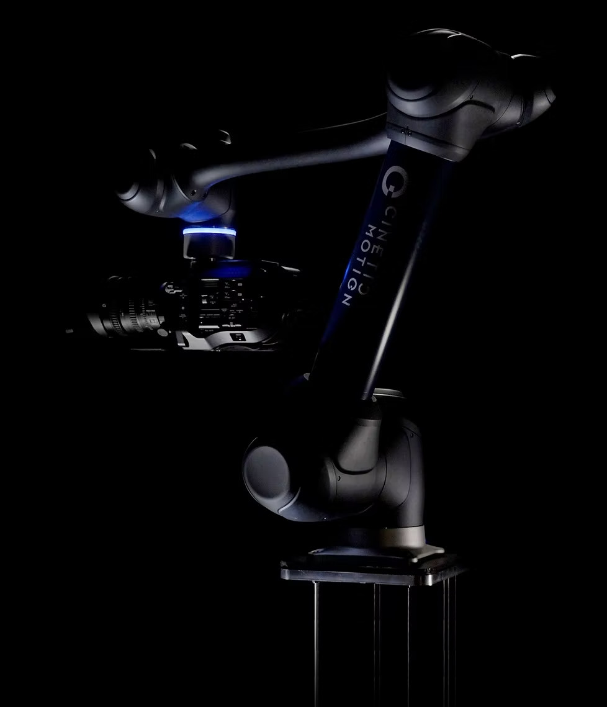
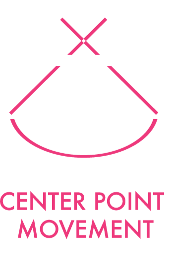
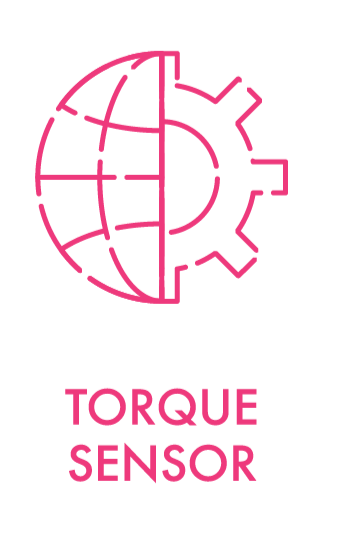
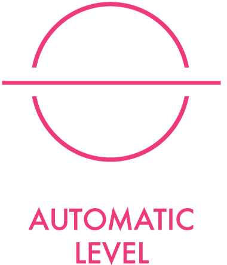
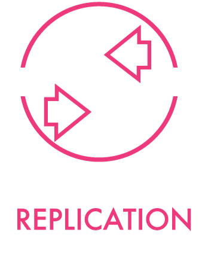

CM-1 optimizes high-level robot control for film/video professionals, extending the scope of work to diverse and creative shooting.

Cinetic Motion's CM-1 is a state-of-the-art professional robot camera system that provides accurate shooting, easy usability and versatility. By incorporating advanced robot technology into filmmaking, repetitive and ultra-precise imaging is performed reliably.
 Intuitive timeline control familiar with existing video tools
Intuitive timeline control familiar with existing video tools Perfect focus/Iris/Zoom control
Perfect focus/Iris/Zoom control 6-axis robot control providing freedom of movements
6-axis robot control providing freedom of movements Controller makes camera angle adjustment faster and easier
Controller makes camera angle adjustment faster and easier
One-touch rotation movement with a provided distance
Maximum safety with torque sensors applied to all motors Extended height and range of activity with additional lift
Extended height and range of activity with additional lift Adjust the angle you want with your hands
Adjust the angle you want with your hands
Precise automatic horizontal/vertical adjustment for any distortions Intuitive project management for multiple motion implementations
Intuitive project management for multiple motion implementations
Pixel accurate repetitive motion for seamless compositing Live monitoring integrated into the interface for accurate framing
Live monitoring integrated into the interface for accurate framing
SPECIFICATION
| Spherical Reach | 2,200 mm in diameter |
|---|---|
| Vertical Reach | 2,700 mm in height (lift stroke 700mm) |
| Load Capability | 10 Kg |
| Robot Speed | 1,000 mm/s |
| Total Weight | 90 kg |
| Robot | 32 kg |
| Controller | 9 kg |
| Lift | 20 kg |
| Base | 20 kg |
| Power | 700W (nominal) AC 220v |